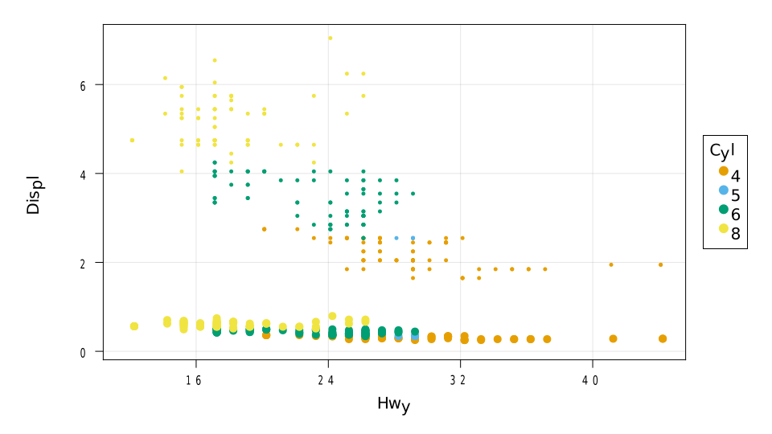

Internals
AlgebraOfGraphics is based on contexts, which can be extended. Each context is then associated to a named tuple style (used for x, y axes or attributes in the plot) and a named tuple group used for grouping, forming a ContextualPair. A list of contextual pairs is called a contextual map.
Contexts
In the default context, all variables in style are broadcasted to a common shape, and each entry corresponds to a separate trace. The syntax dims exists to allow setting group variables that only vary with one of the dimensions. The group => style pairs corresponding to each group can be accessed with Base.pairs:
using RDatasets: dataset
using AlgebraOfGraphics
d = style(:Cyl, :Hwy) * group(color = :Year)
pairs(d)1-element Array{Pair{NamedTuple{(:color,),Tuple{Symbol}},NamedTuple{(Symbol("1"), Symbol("2")),Tuple{Symbol,Symbol}}},1}:
(color = :Year,) => (1 = :Cyl, 2 = :Hwy)The DataContext is invoked with data(df), where df respects the Tables.jl interface. DefaultContexts can be merged onto a DataContext (column names are replaced by the corresponding arrays).
mpg = dataset("ggplot2", "mpg")
t = data(mpg)
pairs(t * d)2-element Array{Pair{NamedTuple{(:color,),Tuple{AlgebraOfGraphics.NamedEntry{Int32}}},NamedTuple{(Symbol("1"), Symbol("2")),Tuple{NamedDims.NamedDimsArray{(:Cyl,),Int32,1,SubArray{Int32,1,Array{Int32,1},Tuple{Array{Int64,1}},false}},NamedDims.NamedDimsArray{(:Hwy,),Int32,1,SubArray{Int32,1,Array{Int32,1},Tuple{Array{Int64,1}},false}}}}},1}:
(color = AlgebraOfGraphics.NamedEntry{Int32}(:Year, 1999),) => (1 = [4, 4, 6, 6, 4, 4, 6, 6, 6, 8 … 6, 6, 4, 4, 4, 4, 4, 4, 6, 6], 2 = [29, 29, 26, 26, 26, 25, 25, 25, 24, 17 … 23, 24, 44, 41, 29, 26, 29, 29, 26, 26])
(color = AlgebraOfGraphics.NamedEntry{Int32}(:Year, 2008),) => (1 = [4, 4, 6, 4, 4, 6, 6, 6, 8, 8 … 4, 4, 4, 5, 5, 5, 5, 4, 4, 6], 2 = [31, 30, 27, 28, 27, 25, 25, 25, 23, 20 … 29, 29, 29, 29, 29, 28, 29, 28, 29, 26])The slicing context is another example. It is invoked with dims(I::Int...), and signals along which dimension on the style to dims to extract series.
using AlgebraOfGraphics: dims
ctx = dims(1)
x = rand(5, 3, 2)
y = rand(5, 3)
pairs(dims(1) * style(x, y) * group(color=dims(2), marker=dims(3)))6-element Array{Pair{NamedTuple{(:color, :marker),Tuple{Int64,Int64}},NamedTuple{(Symbol("1"), Symbol("2")),Tuple{Array{Float64,1},Array{Float64,1}}}},1}:
(color = 1, marker = 1) => (1 = [0.5835253845144885, 0.6628173347171522, 0.24844269109584194, 0.5185290075080378, 0.01594463594163842], 2 = [0.07066626440632229, 0.6285715873474482, 0.04284238055761458, 0.13560150268948812, 0.1688166973133567])
(color = 2, marker = 1) => (1 = [0.6599689155496402, 0.44434984344336237, 0.25932919750130745, 0.18790638741292298, 0.5391784566545581], 2 = [0.3280548257681648, 0.7086923095349476, 0.6113687013522664, 0.08950493189325637, 0.7754383395428237])
(color = 3, marker = 1) => (1 = [0.3402114954301587, 0.18212312609200376, 0.8703669380703631, 0.8135462806134217, 0.6347213781844185], 2 = [0.21062310456680922, 0.6767103328299364, 0.14146463505137108, 0.04993976112974963, 0.9887764216094965])
(color = 1, marker = 2) => (1 = [0.9810945011400984, 0.10932655889960485, 0.5440088997040928, 0.10575649595271241, 0.8763556212208108], 2 = [0.07066626440632229, 0.6285715873474482, 0.04284238055761458, 0.13560150268948812, 0.1688166973133567])
(color = 2, marker = 2) => (1 = [0.3663179403731709, 0.39540893509563824, 0.7929870199256341, 0.23719581288589242, 0.617815879725707], 2 = [0.3280548257681648, 0.7086923095349476, 0.6113687013522664, 0.08950493189325637, 0.7754383395428237])
(color = 3, marker = 2) => (1 = [0.39828878777599197, 0.6443690267591597, 0.24102800933875201, 0.8917982912385021, 0.9815726052264806], 2 = [0.21062310456680922, 0.6767103328299364, 0.14146463505137108, 0.04993976112974963, 0.9887764216094965])Combining operations using trees
All outputs of group, style, data, and dims inherit can be combined using + (adding a new layer), or * (merge information in existing layer).
using AbstractPlotting, CairoMakie
using AlgebraOfGraphics: spec
mpg1 = copy(mpg)
mpg1.Displ = mpg.Displ .* 0.1
ts = (data(mpg) * spec(markersize = 5px) + data(mpg1) * spec(markersize=10px))
sl = ts * style(:Hwy, :Displ) * group(color=:Cyl)AlgebraOfGraphics.Layers(Pair{AlgebraOfGraphics.Spec,AlgebraOfGraphics.ContextualMap}[AlgebraOfGraphics.Spec{Any}(, (markersize = AbstractPlotting.Pixel{Int64}(5),)) => ContextualMap of length 4, AlgebraOfGraphics.Spec{Any}(, (markersize = AbstractPlotting.Pixel{Int64}(10),)) => ContextualMap of length 4])The result can then be plotted using the draw function:
sl * spec(Scatter) |> draw
Implementing a new context
To implement a new context, one can overload:
AlgebraOfGraphics.merge_group_style(c::ContextualPair{<:MyContext}, pd), to allow applyinggroupandstyletoMyContext,Base.pairs(c::ContextualPair{<:MyContext}), which must iteratesgroup::NamedTuple => style::NamedTuplepairs.
See example implementation in the context file.
This page was generated using Literate.jl.